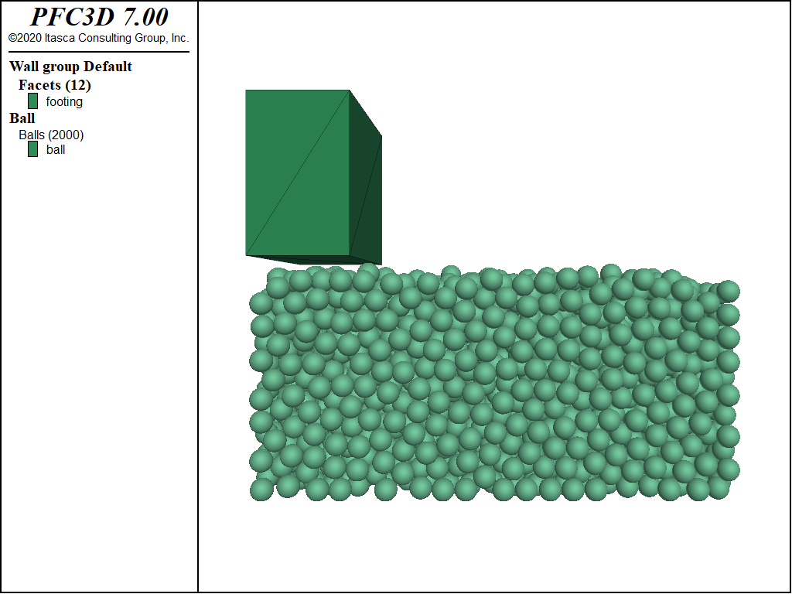
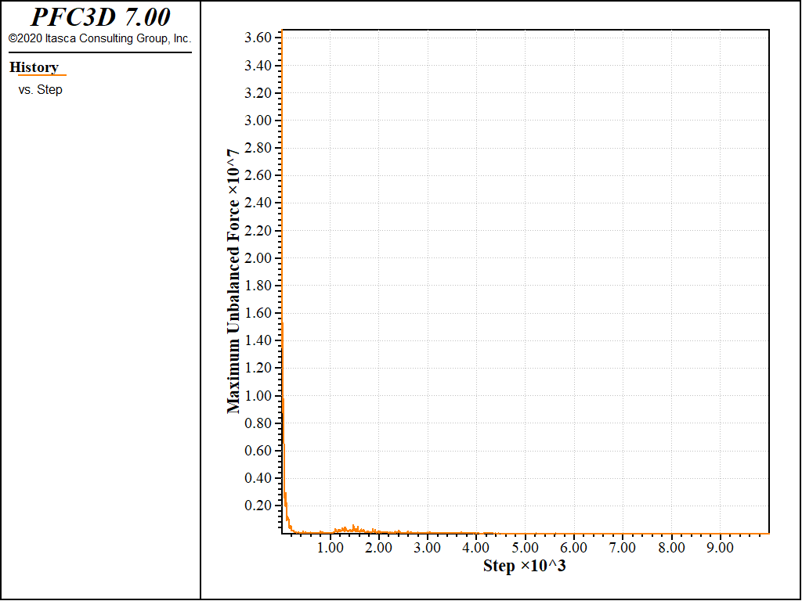
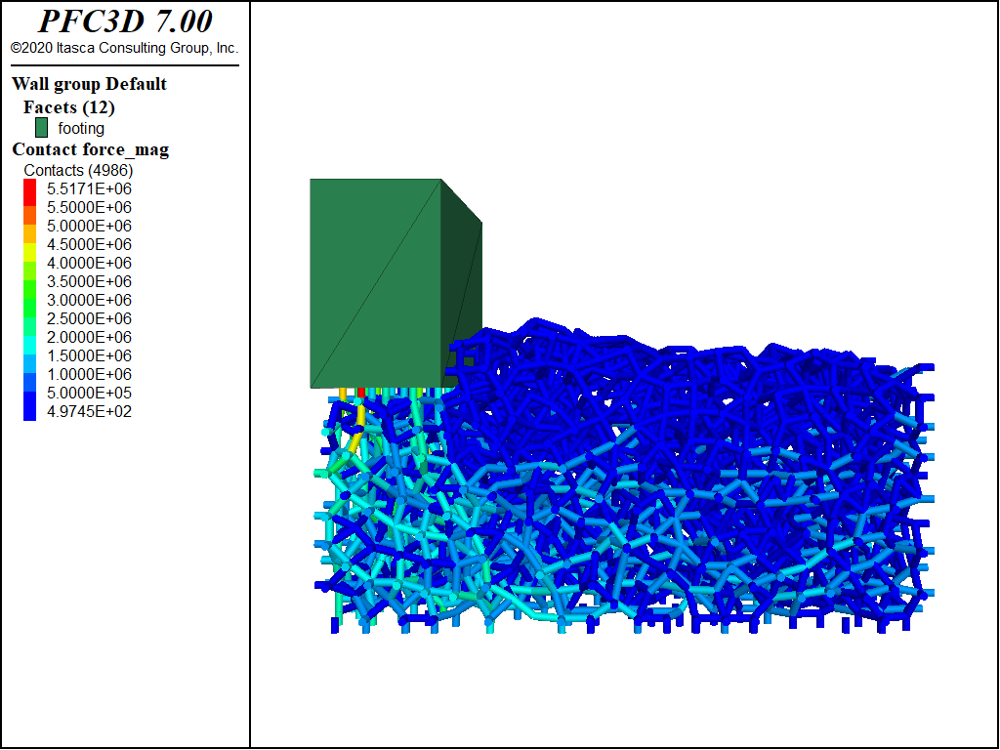
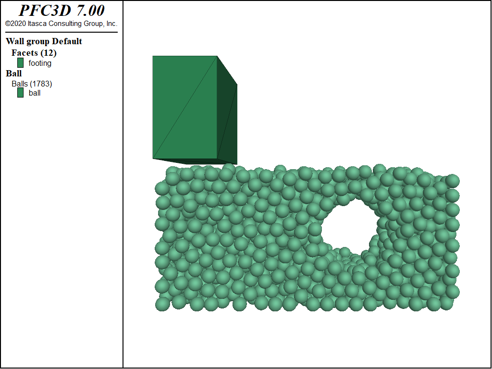
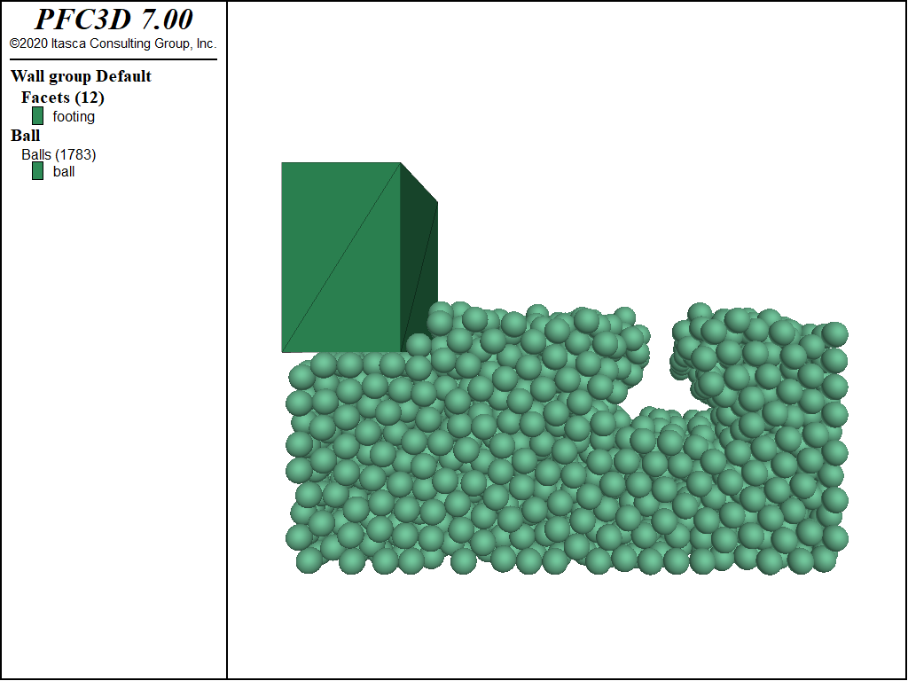
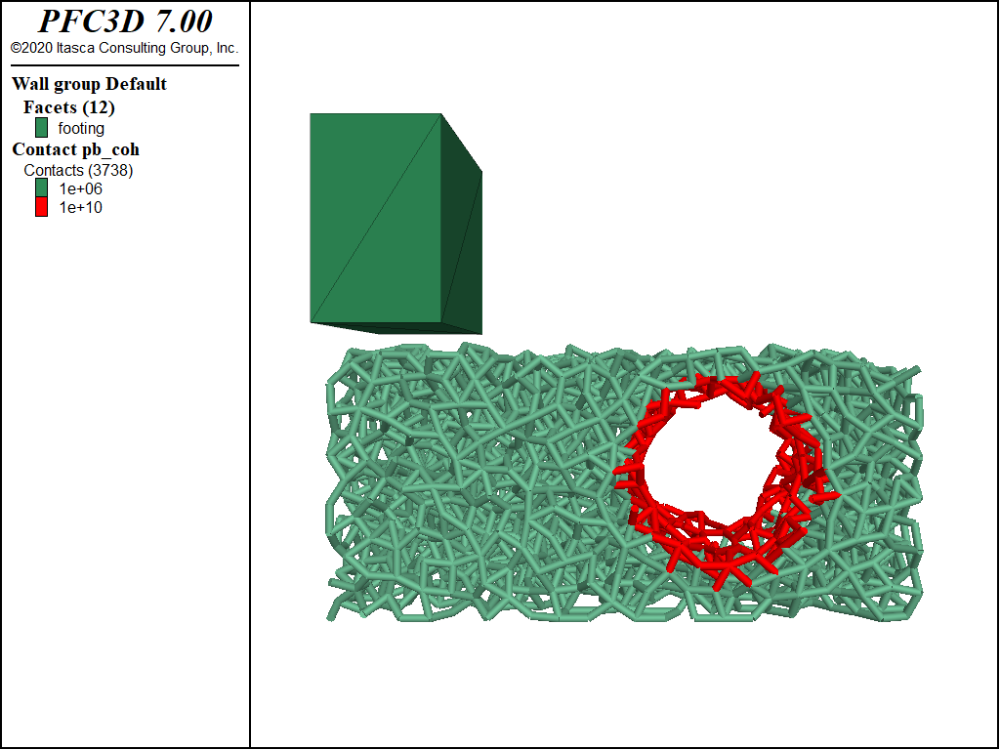
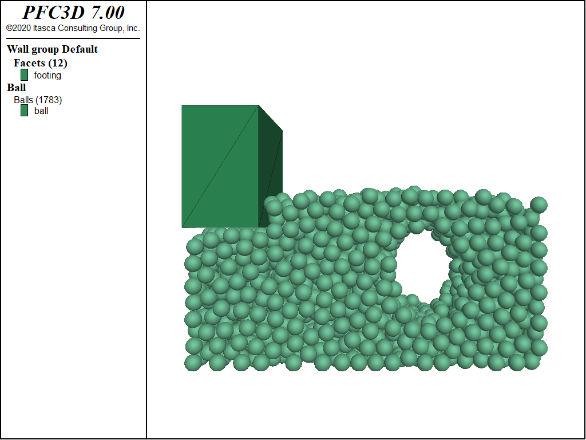

浅基础
引言
注意
本算例的项目文件可在 PFC 中查看或运行。[1]所用的数据文件（data files）列于本算例末尾。
本教程面向希望开始尝试将 PFC 应用于岩土工程场景的新用户。该示例涉及确定置于球颗粒集合体上的粗糙条形基础的承载力。
在本示例中，对基础施加恒定的竖向速度并保持固定时长，同时监测由此产生的荷载。为便于演示，模型较为粗糙，且球颗粒集合体的空间范围有限。


图 1：球颗粒集合体之上的基础三维模型。
在第二阶段，模拟基础附近存在浅埋隧道的情形。讨论了两种配置：安装隧道加固与不安装隧道加固。
球颗粒集合体的制备
将讨论文件“Footing.dat (3D)”中包含的所有命令行。用户也可以交互式地运行此问题：从键盘键入命令，在每条命令行末尾按 Enter，并直接查看结果。此外，用户可以在 PFC 编辑器中打开这些数据文件，高亮要运行的数据文件行，然后按 Ctrl+Shift+E 执行选中的代码行。
model new
model large-strain on
;设置计算域范围与边界条件
model domain extent (-1,25) (-6,6) (-6,20)
model domain condition destroy
创建 域（domain），并定义其尺寸。在模拟过程中，球颗粒和墙体必须保持在指定的计算域内。如果球颗粒或墙面片触及计算域，由于指定了 destroy 条件，它将被销毁（更多细节请参阅 设置模型域命令（model domain） 命令）。
wall generate box (0,24) (-5,5) (0,17)
model random 10001
ball generate box (0,24) (-5,5) (0,10) number 2000 radius 0.40
使用 wall generate 命令生成试样边界。创建一个长方体并指定其尺寸。在此长方体内部，使用 ball generate 命令生成一团尺寸相同的球颗粒。在调用 ball generate 命令之前将随机种子设为 10001，以便每当运行该模型时球颗粒的位置和半径都相同。
contact cmat default type ball-ball model linearpbond ...
property fric 0.577 kn 1e8 ks 1e8 ...
pb_kn 1e8 pb_ks 1e8 pb_ten 1e6 ...
pb_coh 1e6 pb_rmul 0.8 dp_nratio 0.2
contact cmat default type ball-facet model linear ...
property fric 0.09 kn 1e8 ks 1e8 ...
dp_nratio 0.2
接触模型分配表（CMAT）（Contact Model Assignment Table (CMAT)） 必须在每个 PFC 模型中填写，模型对象才能发生相互作用，因为每个接触在通过 CMAT 创建时都会被分配一个接触模型。CMAT 的默认槽位是为球颗粒-球颗粒接触和球颗粒-面片接触定义的。球颗粒-面片接触填充为 线性接触模型（linear contact model）。而球颗粒-球颗粒接触则由 线性平行黏结接触模型（linear parallel bond contact model） 填充。平行黏结在调用 contact method bond 之后、且集合体达到平衡后安装。这一操作使球颗粒集合体能够近似为固体材料。
ball attribute density 2000 radius multiply 1.4
最后分配球颗粒的密度属性，并修改球颗粒半径。ball attribute 命令分配球颗粒的力学属性（即位置、速度、密度等）。ball property 命令则分配表面属性，这些属性可通过继承机制用于分配接触模型属性（即 kn、ks、fric）。当前模型未使用该机制。球颗粒半径通过将原始半径乘以大于 1 的系数来增大（使用 multiply 关键字）。
history interval 5
ball history velocity-z position 12 0 5
model history mechanical unbalanced-maximum
在初始平衡过程中，跟踪最靠近试样中心的球颗粒的 z 向速度以及不平衡力（参见“历史（History）”一节）。在静力分析中评估系统稳定性时，这些信息可能很有用。这些量每五个计算循环以表格形式记录一次（参见 设置历史采样间隔命令（history interval） 命令）。
model mechanical timestep scale
model gravity 0 0 -9.81
model cycle 1000 calm 50
model solve ratio-average 1e-5
时步缩放通过带有 scale 关键字的 模型力学时步（model mechanical timestep） 命令启用。该算法对球颗粒的质量和速度进行缩放，以快速达到平衡状态。请注意，重力不受时步缩放影响，且应力路径可能并不真实。在重力初始化之后，会执行若干计算步。请注意 执行计算时步（model cycle） 命令中 calm 关键字的使用。该操作每隔 50 个计算步将球颗粒的平动和转动速度归零；这是避免因显著重叠而产生过大速度的便捷方法。最后，通过 求解模型（model solve） 达到平均比值为 1e-5 的平衡状态。
如 图 （Figure）Figure #unbalancedforce 所示，模型相对快速地达到了平衡状态。


图 2：不平衡力的演化。
wall delete range set id 2
wall generate group 'footing' box (0,5) (-5,5) (12,20)
删除长方体的顶面片（使用 wall delete 命令）。在试样上方使用 wall generate 命令创建基础。请注意，使用 group 关键字为新创建的面片指定分组标识符。所得的构型如 图 （Figure）Figure #footingview 所示。
contact method bond gap 0.0
model save 'Assembly'
如上所述，使用 contact method bond 在满足间隙条件的接触中安装平行黏结。在本例中，间隙上限为 0.0，这意味着在球颗粒相互重叠的所有球颗粒-球颗粒接触处都会安装平行黏结。若线性平行黏结模型也应用于球颗粒-面片接触，则这些接触中也会安装平行黏结。与 PFC 4.0 不同，在 PFC 6.0 中球颗粒可以黏结到墙面片上。此时保存模拟结果以供后续使用。
基础的安装
wall attribute velocity-z -0.25 range group 'footing'
wall history force-contact-z id 7
; 时间步设为动力模拟的自动值，
; 并额外模拟 5 秒。模型在模拟结束时
; 保存。
model mechanical timestep auto
model solve time 10.0
; 再次求解至平衡状态
wall attribute velocity-z 0.0
model solve ratio-average 1e-5
基础的竖向速度保持不变，并监测由此施加在球颗粒集合体上的荷载。竖向接触力也通过历史进行监测。由于应力路径对于判断加载响应很重要，故将时步设为自动模式；这是一种动力现象。使用 time 求解限制额外模拟 10 秒的模型时间（参见 求解模型（model solve） 命令）。基础安装完成后，将墙体速度归零，并再次求解模型至平衡。
图 （Figure）Figure #forces 显示了加载后球颗粒集合体中接触力的分布。


图 3：加载后球颗粒集合体中接触力的分布。
浅埋隧道的开挖
下面讨论文件“Tunnel.dat (3D)”和“Lining.dat (3D)”。为了从平衡后的模型中开挖隧道，必须先用 恢复模型（model restore） 恢复模型，然后在空间 范围（range） 中删除若干球颗粒。
; 恢复施加基础荷载之前的状态
model restore 'Assembly'
; 通过 'delete' 命令与
; 'range group' 命令开挖一条圆柱形隧道
ball group 'Tunnel' range cylinder end-1 (16.0,-6.0,6.0) ...
end-2 (16.0,6.0,6.0) radius 3.0
ball delete range group 'Tunnel'
; 执行若干循环，以验证隧道开挖后模型是
; 稳定的。模型在此阶段保存。
model cycle 1
model solve ratio-average 1e-5
model save 'StableTunnel'
所有中心位于指定圆柱体内的球颗粒都被赋予分组标识符
Tunnel 并被删除。另一种做法是直接在 ball delete 命令中给出圆柱形 范围（range）。必须执行一个 执行计算时步（model cycle），才能使由模型构型变化产生的接触力累积到球颗粒上。（若不执行该循环，后续的 求解模型（model solve） 命令将立即停止，因为接触施加在球颗粒上的力将处于平衡状态。）此时构型是稳定的（参见 图 （Figure）Figure #tunnelview），可以开展进一步的试验。


图 4：开挖隧道后的模型构型。
;最后通过基础对集合体加载。隧道会发生什么变化？
wall attribute velocity-z -0.25 range group 'footing'
model mechanical timestep auto
model solve time 10.0
; 再次求解至平衡状态
wall attribute velocity-z 0.0
model solve ratio-average 1e-5
基础施加的荷载导致未支护隧道发生灾难性破坏。图 （Figure）Figure #tunnelclosed 显示了破坏后的构型。


图 5：在未支护的浅埋隧道附近安装基础后的构型。
在模拟的第二阶段，引入衬砌以加固隧道。
model restore 'StableTunnel'
; 为开挖周边安装衬砌支护，方法是给隧道周围的接触指定更高的
; 黏聚力和抗拉强度。
; 创建名为 'Lining' 的接触组
contact group 'Lining' range cylinder end-1 (16.0,-6.0,6.0) ...
end-2 (16.0,6.0,6.0) radius 4.0
; 为组 'Lining' 的接触定义一组新参数
contact property fric 0.18 kn 1e8 ks 1e8 ...
pb_kn 1e8 pb_ks 1e8 pb_ten 1e10 ...
pb_coh 1e10 pb_rmul 1.0 dp_nratio 0.2 ...
range group 'Lining'
; 再次通过基础对集合体加载。与未衬砌隧道的
; 情况相比有哪些差异？
wall attribute velocity-z -0.25 range group 'footing'
model save 'Lining'
model mechanical timestep auto
model solve time 10.0
; 再次求解至平衡状态
wall attribute velocity-z 0.0
model solve ratio-average 1e-5
model save 'LinedTunnel'
隧道衬砌通过修改与开挖面直接相邻的那些接触的接触属性来模拟。当基于 范围（range） 为接触赋予分组标识符时，可采用多种不同的准则来判定接触是否属于该分组。可以规定：只要接触的一端或两端位于指定范围内，该接触即属于该分组。图 （Figure）Figure #lining 通过显示平行黏结的黏聚强度来展示这一做法的效果。


图 6：浅埋隧道的衬砌加固。
与前几项试验一样，赋予基础恒定的 z 向速度并保持固定时长，然后将其速度归零，并将系统求解至平衡。图 （Figure）Figure #linedtunnel 显示了加固的效果。沿隧道边界较大的黏聚强度使该构型在承受附加荷载的情况下仍能保持稳定。


图 7：在支护的浅埋 隧道附近安装基础后的模型构型。
讨论
本简单教程说明如何利用 PFC 研究一个岩土工程问题。在箱体中使球颗粒集合体达到平衡，并施加黏结以形成简单的材料。随后安装基础，以检验三种不同构型的稳定性：1) 未扰动构型；2) 含浅埋未支护隧道的构型；3) 含浅埋支护隧道的构型。
数据文件
Footing.dat (3D)
; 文件名：Footing.dat (3D)
;
; 创建球体集合并安装浅基础
;=========================================================================
; excerpt-drmx-start
model new
model large-strain on
;设置计算域范围与边界条件
model domain extent (-1,25) (-6,6) (-6,20)
model domain condition destroy
; excerpt-drmx-end
;生成一个盒子以及由 2000 个等尺寸球组成的球云
; excerpt-gpnp-start
wall generate box (0,24) (-5,5) (0,17)
model random 10001
ball generate box (0,24) (-5,5) (0,10) number 2000 radius 0.40
; excerpt-gpnp-end
; 修改接触模型分配表的默认槽位
; 此处对所有接触选择线性接触模型 (kn=1e8)，
; 球-球接触除外，对其指定 linearpbond 模型。
; 注意，在未调用 bond 接触方法之前（该调用稍后进行），
; linearpbond 模型中只有线性部分被激活
; excerpt-dfof-start
contact cmat default type ball-ball model linearpbond ...
property fric 0.577 kn 1e8 ks 1e8 ...
pb_kn 1e8 pb_ks 1e8 pb_ten 1e6 ...
pb_coh 1e6 pb_rmul 0.8 dp_nratio 0.2
contact cmat default type ball-facet model linear ...
property fric 0.09 kn 1e8 ks 1e8 ...
dp_nratio 0.2
; excerpt-dfof-end
;定义球的密度并增大其半径
; excerpt-wpbs-start
ball attribute density 2000 radius multiply 1.4
; excerpt-wpbs-end
;定义若干历史变量，以绘制集合体中某个球的速度和
;不平衡力。历史变量每 5 个循环记录一次。
; excerpt-wpmn-start
history interval 5
ball history velocity-z position 12 0 5
model history mechanical unbalanced-maximum
; excerpt-wpmn-end
; 为更快达到稳定构型，启用了密度缩放。
; 施加重力
; excerpt-fohe-start
model mechanical timestep scale
model gravity 0 0 -9.81
model cycle 1000 calm 50
model solve ratio-average 1e-5
; excerpt-fohe-end
; 创建盒状基础
; 名称 'footing' 与相应的墙体组关联
; excerpt-yiex-start
wall delete range set id 2
wall generate group 'footing' box (0,5) (-5,5) (12,20)
; excerpt-yiex-end
; 最后安装平行黏结。对球-球接触，
; LinearPBond 模型处于激活状态。模拟在此阶段保存，
; 以便后续可以恢复
; excerpt-incx-start
contact method bond gap 0.0
model save 'Assembly'
; excerpt-incx-end
; 假定基础以恒定速度沉降
; 基础底面的接触力在模拟过程中被
; 记录
; excerpt-oybj-start
wall attribute velocity-z -0.25 range group 'footing'
wall history force-contact-z id 7
; 时间步设为动力模拟的自动值，
; 并额外模拟 5 秒。模型在模拟结束时
; 保存。
model mechanical timestep auto
model solve time 10.0
; 再次求解至平衡状态
wall attribute velocity-z 0.0
model solve ratio-average 1e-5
; excerpt-oybj-end
model save 'Footing'
;=========================================================================
; 文件结束：Footing.dat (3D)
Tunnel.dat (3D)
; 文件名：Tunnel.dat (3D)
;
; 开挖无支护隧道
;=========================================================================
; excerpt-hldb-start
; 恢复施加基础荷载之前的状态
model restore 'Assembly'
; 通过 'delete' 命令与
; 'range group' 命令开挖一条圆柱形隧道
ball group 'Tunnel' range cylinder end-1 (16.0,-6.0,6.0) ...
end-2 (16.0,6.0,6.0) radius 3.0
ball delete range group 'Tunnel'
; 执行若干循环，以验证隧道开挖后模型是
; 稳定的。模型在此阶段保存。
model cycle 1
model solve ratio-average 1e-5
model save 'StableTunnel'
; excerpt-hldb-end
; excerpt-tiwq-start
;最后通过基础对集合体加载。隧道会发生什么变化？
wall attribute velocity-z -0.25 range group 'footing'
model mechanical timestep auto
model solve time 10.0
; 再次求解至平衡状态
wall attribute velocity-z 0.0
model solve ratio-average 1e-5
; excerpt-tiwq-end
model save 'UnlinedTunnel'
;=========================================================================
; 文件结束：Tunnel.dat (3D)
Lining.dat (3D)
; 文件名：Lining.dat (3D)
;
; 为隧道安装衬砌支护
;=========================================================================
; excerpt-phqs-start
model restore 'StableTunnel'
; 为开挖周边安装衬砌支护，方法是给隧道周围的接触指定更高的
; 黏聚力和抗拉强度。
; 创建名为 'Lining' 的接触组
contact group 'Lining' range cylinder end-1 (16.0,-6.0,6.0) ...
end-2 (16.0,6.0,6.0) radius 4.0
; 为组 'Lining' 的接触定义一组新参数
contact property fric 0.18 kn 1e8 ks 1e8 ...
pb_kn 1e8 pb_ks 1e8 pb_ten 1e10 ...
pb_coh 1e10 pb_rmul 1.0 dp_nratio 0.2 ...
range group 'Lining'
; 再次通过基础对集合体加载。与未衬砌隧道的
; 情况相比有哪些差异？
wall attribute velocity-z -0.25 range group 'footing'
model save 'Lining'
model mechanical timestep auto
model solve time 10.0
; 再次求解至平衡状态
wall attribute velocity-z 0.0
model solve ratio-average 1e-5
model save 'LinedTunnel'
; excerpt-phqs-end
;=========================================================================
; 文件结束：Lining.dat (3D)
Footing.dat (2D)
; 文件名：Footing.dat (2D)
;
; 创建集合体并安装浅基础
;=========================================================================
new
;设置计算域范围与边界条件
domain extent (-1,25) (-6,20)
domain condition destroy
;生成一个盒子以及由 2000 个等尺寸球组成的球云
wall generate box (0,24) (0,17)
set random 10001
ball generate box (0,24) (0,10) number 2000 radius 0.1250
; 修改接触模型分配表的默认槽位
; 这里对所有接触类型选用线性接触模型 (kn=1e6)，但
; 球-球接触除外，对其指定 linearpbond 模型。
; 注意，在未调用 bond 接触方法之前（该调用稍后进行），
; linearpbond 模型中只有线性部分被激活
cmat default type ball-ball model linearpbond ...
property fric 0.577 kn 1e8 ks 1e8 ...
pb_kn 1e8 pb_ks 1e8 pb_ten 1e6 ...
pb_coh 1e6 pb_rmul 0.8 dp_nratio 0.2
cmat default type ball-facet model linear ...
property kn 1e8 ks 1e8 fric 0.09 ...
dp_nratio 0.2
;定义球的密度并增大其半径
ball attribute density 2000 radius multiply 1.4
;定义若干历史变量，以绘制集合体中某个球的速度和
;不平衡力。历史变量每 5 个循环记录一次。
set hist_rep 5
history ball yvelocity 12 5
history mechanical solve unbalanced
; 为更快达到稳定构型，启用了密度缩放。
; 施加重力
set timestep scale
set gravity 0 -9.81
cycle 1000 calm 50
solve aratio 1e-5
; 创建盒状基础
; 名称 'footing' 与相应的墙体组关联
wall delete range set id 3
wall generate group footing box (0,5) (11,20)
; 最后安装平行黏结。对球-球接触，
; LinearPBond 模型处于激活状态。模拟在此阶段保存，
; 以便后续可以恢复
contact method bond gap 0.0
save Assembly
; 假定基础以恒定速度沉降
; 基础底面的接触力在模拟期间被记录
; 保存。
wall attribute yvelocity -0.25 range group footing
history wall yforce-contact id 7
; 时间步设为动力模拟的自动值，
; 并额外模拟 5 秒。模型在模拟结束时
; 保存。
set timestep auto
solve time 10.0
; 再次求解至平衡状态
wall attribute yvelocity 0.0
solve aratio 1e-4
save Footing
;=========================================================================
; 文件结束：Footing.dat (2D)
Tunnel.dat (2D)
; 文件名：Tunnel.dat (2D)
;
; 开挖无支护隧道
;=========================================================================
; 恢复施加基础荷载之前的状态
restore Assembly
ball group Tunnel range circle center 16.0 5.0 radius 3.0
ball delete range group Tunnel
; 执行若干循环，以验证隧道开挖后模型是
; 稳定的。模型在此阶段保存。
cycle 1
solve aratio 1e-4
save StableTunnel
;最后通过基础对集合体加载。隧道会发生什么变化？
wall attribute yvelocity -0.25 range group footing
set timestep auto
solve time 10.0
; 再次求解至平衡状态
wall attribute yvelocity 0.0
solve aratio 1e-4
save UnlinedTunnel
;=========================================================================
; 文件结束：Tunnel.dat (2D)
Lining.dat (2D)
; 文件名：Lining.dat (2D)
;
; 为隧道安装衬砌支护
;=========================================================================
restore StableTunnel
contact groupbehavior contact
contact group Lining range circle center 16.0 5.0 radius 4.0
contact property fric 0.18 kn 1e8 ks 1e8 ...
pb_kn 1e8 pb_ks 1e8 pb_ten 1e10 ...
pb_coh 1e10 pb_rmul 1.0 dp_nratio 0.2 ...
range group Lining
wall attribute yvelocity -0.25 range group footing
save Lining
set timestep auto
solve time 10.0
wall attribute yvelocity 0.0
solve aratio 1e-4
save LinedTunnel
;=========================================================================
; 文件结束：Lining.dat (2D)
尾注
| [1] | 要在 PFC 中查看本项目，请使用程序菜单。
⮡ PFC |
| 这些内容对您有帮助吗？… | FLAC3D © 2019, Itasca | 原文更新于 2020 年 10 月 8 日 |